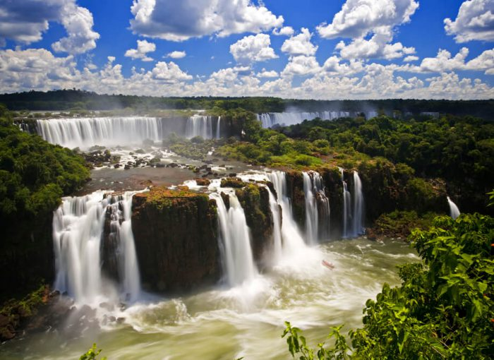
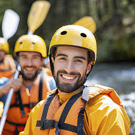
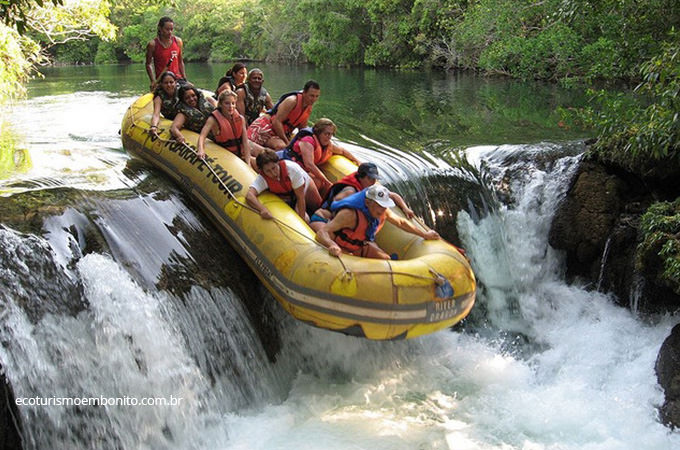
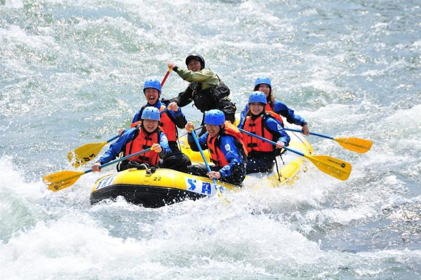
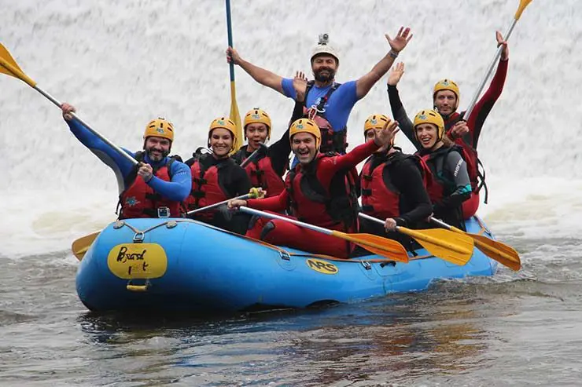
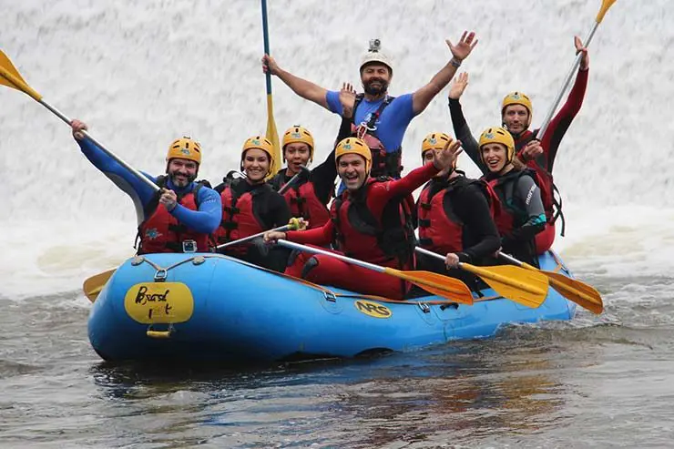

Your adventure starts here!


EcoRápidos Adventures
History
Founded in 2005 in Brotas, São Paulo, EcoRápidos Adventures was created by friends passionate about nature and extreme sports. Starting with only two rafts, the company grew into a national reference in sustainable adventure tourism, always prioritizing safety, environmental protection, and unforgettable experiences.
Adventure Awaits You!
  
